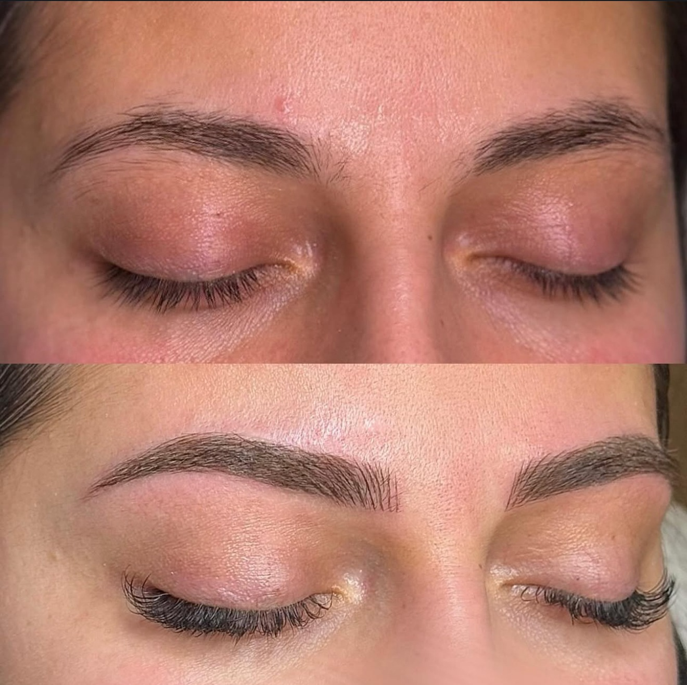

Formation lash lift coréen
Une formation consacrée au lash lift coréen, une technique de rehaussement des cils naturels.
Demander les détails — Formation lash lift coréen
Découvrez nos six formations : lash lift coréen, head spa, lip blush, brow lamination, Nano brow et soin de visage. Maison Malaak vous accueille au 300 Bd Churchill, à Greenfield Park.
Pour connaître le programme, les prérequis, les dates, la durée et le tarif de chaque formation, contactez-nous directement.
Explorez les formations proposées par Maison Malaak et contactez-nous pour préparer votre projet.
Une formation consacrée au lash lift coréen, une technique de rehaussement des cils naturels.
Demander les détails — Formation lash lift coréenUne formation consacrée au Head Spa, un rituel de soin du cuir chevelu et de détente.
Demander les détails — Formation head spaUne formation consacrée au lip blush, une technique de maquillage permanent des lèvres.
Demander les détails — Formation lip blushUne formation consacrée à la brow lamination, une technique de mise en forme des sourcils.
Demander les détails — Formation brow laminationUne formation consacrée aux Nano brows, une technique de maquillage permanent des sourcils.
Demander les détails — Formation Nano browUne formation consacrée aux soins du visage et à l’accompagnement des clientes dans leur routine de beauté.
Demander les détails — Formation soin de visageIndiquez la formation qui vous intéresse et votre expérience actuelle. Nous pourrons vous communiquer les renseignements nécessaires avant votre inscription.
(438) 992-9175 · info.maisonmalak@gmail.com
Adresse et coordonnées de Maison Malaak